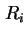
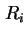
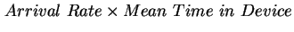
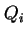
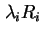

กฎของ Little เป็นหนึ่งในกฎการปฏิบัติการ สมมุติฐานที่ต้องการคือจำนวนงานที่เข้ามาในระบบ เท่ากับจำนวนงานที่ออกจากระบบ นั่นคือความสมดุลการไหลของงาน
เราสามารถใช้งานกฎของ Little ประกอบกับความยาวคิว  และเวลาตอบสนอง  ที่อุปกรณ์
และเวลาตอบสนอง  ที่อุปกรณ์ 
|  | |||
|  |  | (7.42) |
| (7.43) |